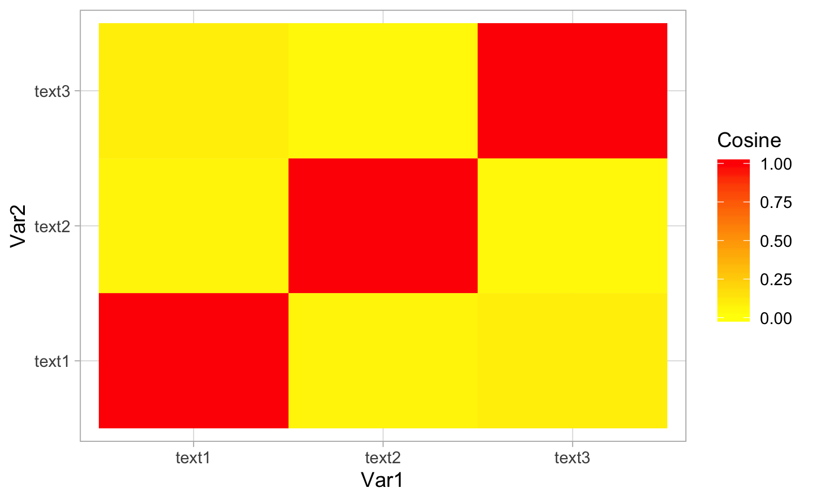
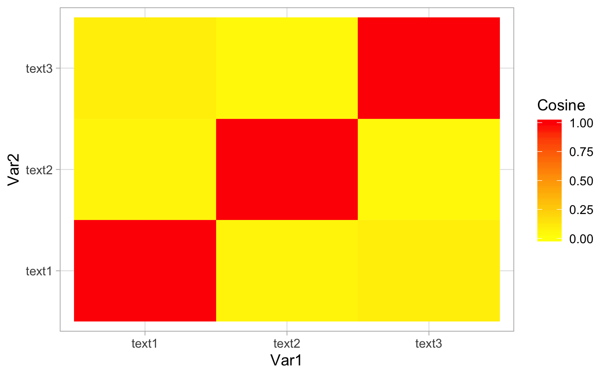

Chapter 4 EDA Macron
4.1 Wajma
#> [1] " 1. COVID-19 - Statement to the French people by M. Emmanuel Macron, President of the Republic, on the COVID-19 coronavirus (Paris - March 12, 2020)[Check against delivery]Men and women of France, my dear compatriots,Over the past few weeks, our country has been confronted with the spread of a virus, COVID-19, which has affected several thousand of our fellow citizens. First and foremost, my warmest thoughts naturally go out this evening to the families and loved ones of our victims. This epidemic, which is affecting every continent and striking every European country, is the most serious health crisis France has experienced in a century. In the vast majority of cases, COVID-19 does not pose a threat, but the virus can have very serious consequences, especially for those of our fellow citizens who are elderly or suffer from chronic illnesses such as diabetes, obesity or cancer.We have been making preparations and taking action for several weeks now. Hospital staff, doctors, nurses, paramedics, emergency medical personnel, hospital workers, private physicians, and the entire staff of France’s Public Health Service are working assiduously and effectively. If we have been able to slow the spread of the virus and limit the most severe cases, it is thanks to them, because they all answered the call. They all agreed to take time out of their personal and family lives for the sake of our health. That is why, in your name, I would like first of all to express the nation’s gratitude to these white-coated heroes, these thousands of admirable men and women whose only ambition is to provide care, whose only concern is the human being, our well-being and - quite simply - our lives.This evening I also want to applaud your cool-headedness. With the spread of the virus you may have felt concern or anxiety for yourselves and your loved ones, and that is perfectly justified. But you have faced the situation without yielding to anger or panic. Even better, by taking the right steps, you have slowed the spread of the virus, allowing our hospitals and caregivers to become better prepared. That is what makes a great nation. Men and women able to place the collective interest above everything, a community of human beings held together by values: solidarity and fraternity.But, my dear compatriots, I want to tell you this evening with great seriousness and in all honesty that, even with a collective will to be well organized, we are only at the beginning of this epidemic. It is accelerating and intensifying throughout Europe. Our absolute priority for our nation is therefore our health. I will spare no effort in this regard.In determining which actions to take, we are guided by one principle, one that has guided us from the beginning in anticipating this crisis and managing it over the past few weeks, and will continue to do so: our trust in science. Listening to those who know. The greatest European specialists spoke out this morning in an important publication. Today, with the Prime Minister and the Minister for Health, I convened our Scientific Committee. In France we have the best virologists, the best epidemiologists, specialists of great renown and clinicians too, and people who are on the ground, all of whom we listen to, as we have done since day one. They have all told us that despite all our efforts to stop it, the virus is continuing to spread and is in the process of accelerating. We knew this, we were afraid of this.What might happen is that the illness will first affect those who are most vulnerable. Many of them will need appropriate hospital care, often respiratory support. That is why - and I will come back to this in a moment - we are taking very strong measures to massively increase capacity at our hospitals, because it will be a challenge to continue treating other illnesses. It also means preparing for a possible second wave that, in much smaller numbers, will affect younger people who have, a priori, had less exposure to the disease but who will also require treatment.In this context, the most urgent need is to protect those of our fellow citizens who are most vulnerable. The most urgent need is to slow the epidemic in order to protect our hospitals, our emergency and life support services, and our caregivers who, as I explained, will have to treat more and more affected patients. These are our priorities. That is why we must continue to buy time and monitor those who are most fragile. Protecting the vulnerable first is our absolute priority.That is why this evening I am asking all those above 70, those who suffer from chronic illnesses or respiratory conditions, and those with disabilities to stay home as much as possible. They may of course leave their homes to do their shopping and get some fresh air, but they must limit their contact with other people as much as possible. In this context, I have asked scientists about our municipal elections, whose first round will be held in a few days. They believe there is no reason for the French, even the most vulnerable, to refrain from voting. I also asked the Prime Minister to consult broadly with all political parties, which he did again this morning, and they all expressed the same wish. But it is important to strictly comply with steps taken to prevent the virus and health recommendations. I have faith in the mayors and in the civic-mindedness of each one of you. I also know that the mayors and government agencies have done a good job of organizing things. Strengthened guidelines will be provided starting tomorrow to ensure that our elderly do not have to wait for a long time, that adequate distances are respected, and that measures to prevent transmission are respected. But it is important, at this time, and while following scientists’ advice as we have just done, to ensure the continuity of our democratic life and our institutions. In short, the top priority today is to protect the weakest, those whom this epidemic is affecting first. The second priority is to slow the epidemic. Why? As the Minister of Health and the Director-General for Health have explained several times, to avoid a large number of patients in respiratory distress in our emergency and life support services. We must continue to buy time and in order to do so, I am going to ask you to continue making sacrifices, and in fact to make even more, for the sake of our collective interest.Starting on Monday and until further notice, childcare centers, elementary and secondary schools and universities will be closed for one simple reason: according to scientists, our children, including our youngest, are those who seem to spread the virus most quickly, even though they may not have symptoms and fortunately do not seem to be suffering from acute forms of the illness. This is both to protect them and to reduce the spread of the virus throughout our country.Childcare arrangements will be put in place in each region; we will find the best way to ensure that the children of essential health crisis-management personnel will be looked after so that they will still be able to go to work to protect you and care for you. The Government will work out this system in the coming days with all the elected representatives and officials in our country.Where possible, I am asking companies to allow their employees to work remotely. Our ministers have already announced this; we have done a lot to help develop teleworking. This must be continued, expanded as far as possible. Public transport will be maintained, because stopping that would mean stopping everything, including the ability to seek treatment. But here again, I am appealing to your sense of responsibility and I urge all French citizens to avoid all unnecessary movement. The government will also announce measures to limit gatherings as much as possible.At the same time, our health system, notably intensive care units, should prepare to receive increasingly serious cases of COVID-19 and continue to treat other patients. Beds must be made available in our hospitals. To achieve that, all national hospital capacity and as many doctors and nurses as possible will be mobilized. We will also mobilize students and young retirees. Exceptional measures will be taken in this respect. Many of them have already started. I would like to thank them. A few days ago, at the Paris emergency medical services center, I witnessed a wonderful, moving and extraordinary mobilization effort by students, who, a few months away from taking their examinations, were there to respond to calls, to help, and by doctors who had just retired and had returned to lend their assistance We will make this the norm by taking the right measures. At the same time, non-essential care at hospitals will be postponed, i.e. operations that are not urgent, anything that can help us buy more time. Health does not have a price. The government will mobilize all necessary financial resources to provide assistance, to treat patients, to save lives, regardless of the cost. We will retain many of the decisions that we are now taking, many of the changes that we are now making, because we are also learning from this crisis, because our healthcare professionals are incredible in terms of innovation and commitment, and we will learn from what we are doing and we will come out of the situation with an even stronger health system.Our researchers are also part of this broad effort. Many French and European programs, clinical trials, are under way in order to provide, in sufficient quantities, fast, effective and efficient diagnoses. We will make improvements in this area, and work has been initiated at the national as well as European level. Our professors, with the support of private stakeholders, are already working on several treatment options in Paris, Marseille, Lyon, and elsewhere. Protocols have been initiated. I hope that in the next few weeks and months, we will have the first treatment available which we will be able to make widely available. Europe has the necessary resources in order to provide the world with an antidote for COVID-19. Teams are also working hard to invent a vaccine. It will not be available for several months, but it is very promising. French and European research efforts are also key, and I will continue to intensify them.This ordeal also requires social mobilization to help the most disadvantaged, the most vulnerable people. The suspension of tenant evictions during the winter period will be extended by two months and I am asking the government to take exceptional measures to help the most disadvantaged in this respect. Lastly, the ordeal we are experiencing calls for collective efforts on the economic front. I know that restaurant owners, merchants, artisans, hotel owners and tourism, cultural, event and transport professionals are suffering. Entrepreneurs are worried about their order books, and all of you are worried about your jobs, your buying power. I know, it’s a legitimate concern. With the decisions that I have just announced this evening, these economic concerns will obviously increase.We will not add the fear of bankruptcy for entrepreneurs, concerns about unemployment and the challenge of making ends meet at the end of the month to the health worries. Every effort will therefore be made to protect our employees and to protect our companies, regardless of the cost. In the next few days, a special large-scale partial unemployment mechanism will be introduced. Initial announcements have been made by our ministers. We will go much further than that. The government will compensate workers forced to stay at home. In this respect, I would like to draw inspiration from the system implemented by Germany, which is more generous and simpler than ours. I want us to be able to preserve jobs and skills, i.e. ensure that employees can stay with their companies, even if they are forced to stay at home, and that we will pay them. I also want us to be able to protect our freelance workers. We will take all necessary measures to provide this guarantee on the economic front.All companies that wish to do so will be able, without any justification, special procedures or penalties, to defer the payment of taxes and contributions due in May. We will then work on the measures needed for debt forgiveness or rescheduling, but I know that we always take too long to do that. I want simple measures in order to rebuild our economic strength. Payments that are due in the next few days and weeks will be deferred for all those who need it. We will protect all of our companies, large and small. We will protect all of our workers. At the same time, I have asked the government to prepare, as of now, a national and European recovery plan consistent with our priorities and commitments for the future.We must also provide a European response. The Central Bank has already, today, shared its preliminary decisions. Will they be enough? I don’t think so. It will be up to the bank to take further decisions. But I want to be very clear with you this evening: We Europeans will not allow a financial and economic crisis to spread. We will react aggressively and swiftly. All European governments must take decisions to support economic activity and recovery, regardless of the cost. France will do so and I will present this policy on your behalf at the European level. I already did so at the special council yesterday. I don’t know how the financial markets will respond in the next few days and I will be just as clear on this. Europe will respond in an organized way and on a massive scale in order to protect its economy. I also want us to be able to take international measures, and I call on the G7 and G20 powers to assume their responsibilities. I will speak with President Trump tomorrow in order to propose an exceptional initiative between the G7 members, since he holds the presidency. It will be our ability to work together to get things right early on and to take action together that will help us address what is now a global crisis, not division.My dear compatriots, all these measures are necessary for everyone’s safety and I ask you to get behind them. Indeed, we will not be able to overcome a crisis of such magnitude without standing together. We will not be able to overcome a crisis of such magnitude without great individual and collective discipline, without unity. I’m hearing a vast array of opinions in our country today. Some people are saying, \"you’re not doing enough\" and would like to close everything and are worried about everything and some think that the danger doesn’t affect them. I have tried to present to you this evening the policies that should apply to our entire country. My dear compatriots, we must avoid two pitfalls.First, being too centered on national interests. This virus doesn’t have a passport. We need to join forces, coordinate our responses and cooperate. France is ready to set to work. European coordination is essential, and I’ll ensure this happens. We’ll probably have to adopt measures, but they must be adopted to reduce interactions between affected and unaffected areas. We aren’t necessarily talking about national borders. We mustn’t take the easy option or panic in any way. We’ll probably have to adopt control measures, border closures, but we’ll have to adopt them when they’re appropriate, we’ll have to adopt them as Europeans, Europe-wide, because that’s the level at which we’ve built our freedoms and protections.The other danger would be that of being too centered on individual self-interest. We can never overcome such difficulties on our own. On the contrary, it’s by standing shoulder to shoulder and saying \"we\" rather than thinking \"I\" that we’ll meet this huge challenge. This is why I want to tell you this evening that I’m counting on you in the coming days, weeks and months. I’m counting on you because the Government can’t do everything alone and because we’re a nation. Everyone has their role to play. I’m counting on you to follow current and future guidelines issued by the authorities, particularly the well-known \"barrier actions\" to combat the virus. Even now, these are inadequately applied. It means washing your hands long enough with soap or anti-bacterial gel. It means greeting people without kissing them or shaking their hand to avoid passing on the virus. It means keeping a distance of a meter away. These actions may seem insignificant to you. They save lives. This is why, my dear compatriots, I solemnly urge you to adopt them.Every one of us plays a part protecting others, starting with our loved ones. I’m also counting on you to care for those of our compatriots who are most vulnerable. Don’t visit elderly people. I’m well aware that this will break people’s hearts. But it’s necessary temporarily. Write, phone, ask how they are and protect [them] by restricting visits. Yes, I’m also counting on you to help out neighbors if they’re medical staff and need to find a way of getting their children looked after so they can go off to work and care for others. I’m counting on businesses to help all employees who can work from home to do so. I’m counting on us all to create new forms of solidarity at this time. In this respect I’m asking the Government to work towards this with social partners and voluntary organizations. This crisis must provide the opportunity for a national mobilization of solidarity between generations. We have the ability to do this. Efforts are already being made on the ground. We can be even stronger if we act together.I’m also obviously counting on all our care professionals. I know everything they’ve done already, I know what they’ve still got to do. The Government and I will be there, we’ll shoulder all our responsibilities for you. I’m thinking of all our medical staff in hospitals, who will have to deal with the most serious cases but also many emergencies. I’m thinking of doctors, nurses and all care professionals who aren’t in hospitals and are working tremendously hard and whom we’re going to be calling on increasingly in the coming weeks.I know I can count on you. The Health Minister will also have the opportunity in the next few hours to set out regulations so we can help protect you effectively against the virus. This is out of our respect for you and is obviously what the Nation owes you. The regulations will be clear for everyone; they will also be in proportion and explained.I’m counting on all of you basically to come together as a nation. To show the best of ourselves, to show that generous spirit which, in the past, allowed France to face the toughest ordeals.My dear compatriots, tomorrow we shall have to learn the lessons of the time we’re living through, question the development model our world has adopted for decades - whose failings are being exposed for all to see - and question the weaknesses of our democracies. What this pandemic is already revealing is that free healthcare not conditional on people’s income, history or profession, and our welfare state, are not costs or burdens but precious assets, essential strengths when destiny strikes. What this pandemic is revealing is that there are goods and services that must be placed outside the laws of the market. Delegating to others our food, our protection, our ability to care and ultimately our quality of life is madness. We must take back control of them and build, even more than we are already doing, a sovereign France and Europe, a France and Europe that hold their destiny firmly in their hands. The coming weeks and months will require unprecedented decisions to this effect. I shall take responsibility for them.But today is the time for protecting our fellow citizens and for the Nation’s cohesion. It’s the time for that sacred unity which consists in following the same path together, not panicking, being afraid or complacent, but regaining that strength of mind which has enabled our people to overcome so many crises throughout history.A united France is our best asset in the troubled period we are living through. We shall all stand together.Long live the Republic! Long live France! "| Text | Types | Tokens | Sentences |
|---|---|---|---|
| text1 | 1003 | 3863 | 191 |
#> Warning: colors is deprecated; use color instead
#> text1
#> 0.401
#> Warning: Removed 676 rows containing missing values (geom_point).
#> Warning: Removed 676 rows containing missing values (geom_text). 
